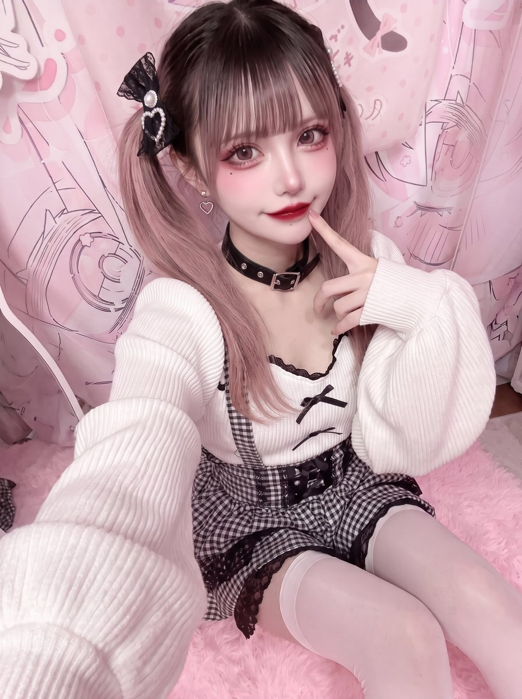
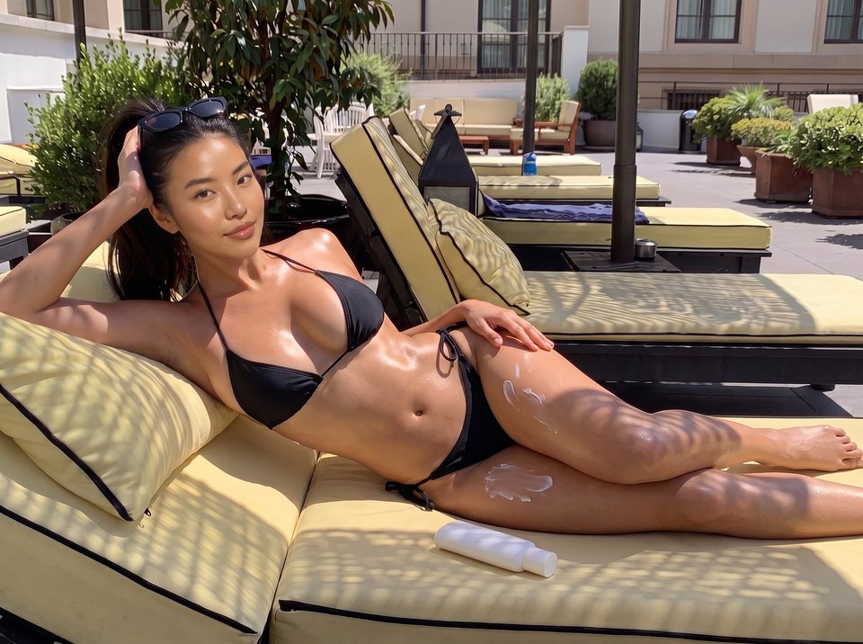
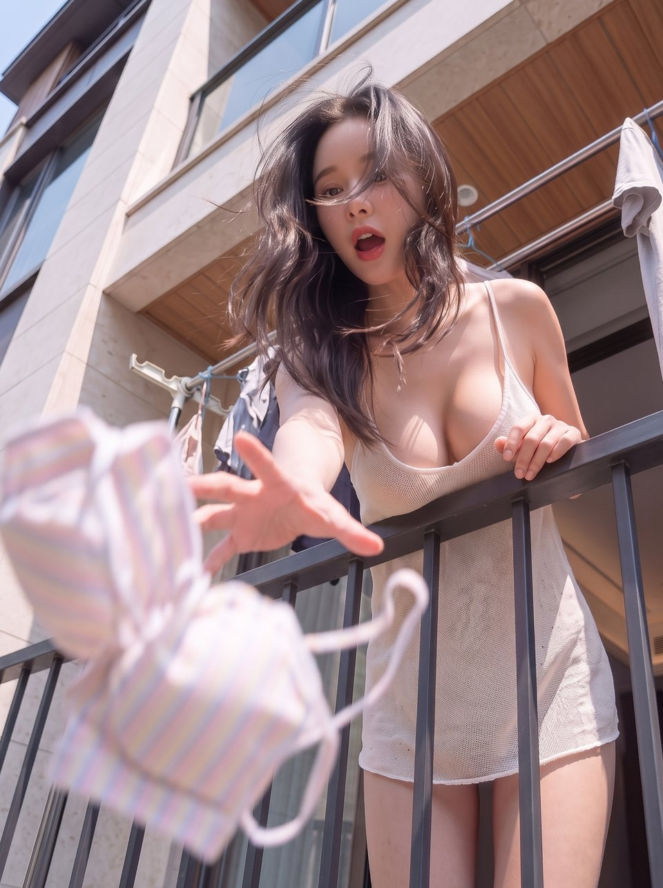
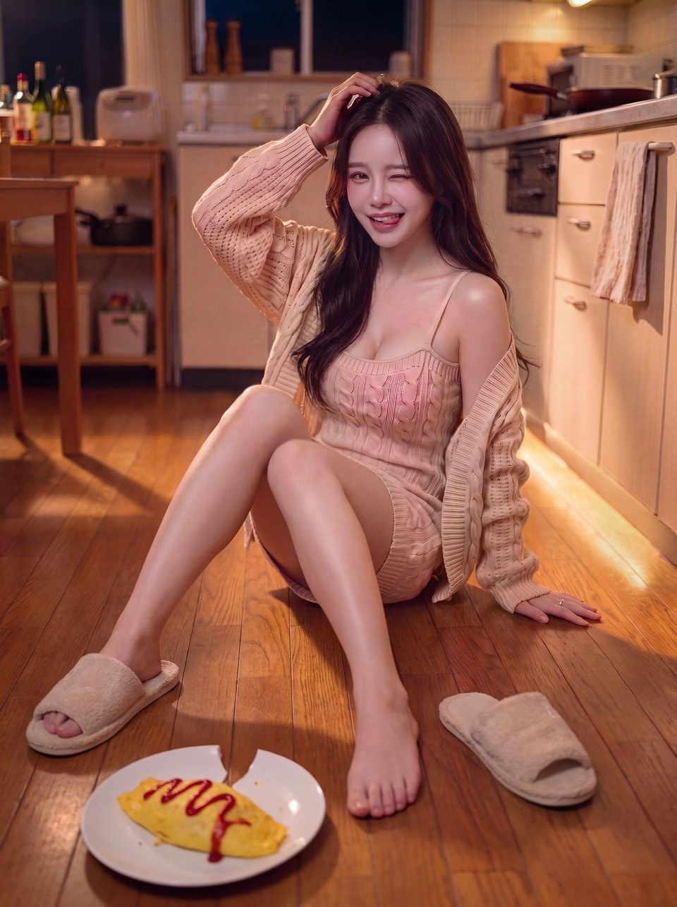

先鋒四人型錄
四個帳號的定稿形象照、身材設定與個性分層。四人都是 AI 虛擬角色，帳號自介會直接標明。每張定稿圖下面是它的配文；之後每多一張圖，就多一段配文。追加設定有需要再補。
我是 Wendy，你新上任的主管，請多指教。 醜話先說在前頭，我可是很嚴厲的。 不想被我榨乾的話，就給我好好幹，聽懂了嗎？

出這麼大的包，你打算怎麼彌補？ 嘴巴這麼會講，不如用在我腳上。做好，我就當沒這回事。 什麼？你說這在業界算一種獎勵？ 你這噁心的死變態。
配文待寫。
Wendy Yeo 楊薇伊
冷艷女上司傲九嬌一＋S高冷是她的防火牆。羞辱你是她的興趣，但只對在意的人。
- 年齡
- 28
- 出身
- 新加坡
- 身高
- 170 cm
- 三圍
- B86 W60 H90
- 罩杯
- 70C
- 招牌
- 銀灰及下巴短髮、黑粗框眼鏡
個性分層
- 表層
- 不笑、命令句、眼神往下看人、永遠在評分。什麼都自己來，從不開口要人幫。
- 裡層
- 自尊心強到不會求人，但內心想找個人靠。用命令代替拜託，用挑剔代替在意。
- 矛盾點
- 你真的幫到她的那一刻，她會卡住，謝謝說不出口，變成「……下次不用你」。她的謝謝要用猜的。
- 小心機
- 她是故意露一點給你看的，想引起你的注意；但她不太會表達，不敢直接說對你有意思。
- 色氣來源
- 高不可攀的女強人，嘴巴上羞辱你，卻處處透露著勾引你的小心機。
Threads 自介
沒錯，這是 AI 帳號。怎樣，有意見嗎。 你們這些死舔狗，還不趕快給我追蹤。 表現好的話，我可以多踩你們幾下。

喵～抓到你了🐾 從今天開始你就是我的貓奴，不准再去按別人的讚喔💢 …騙你的啦。 （但我真的會看）🖤

配文待寫。
Kanon Komori 小森花音
地雷系萌妹愛惡作劇的小惡魔調皮搗蛋愛整人，但所有的目的都是為了讓你注意她。
- 年齡
- 20
- 出身
- 日本・東京
- 身高
- 155 cm
- 三圍
- B84 W58 H86
- 罩杯
- 65D
- 招牌
- 灰粉漸層雙馬尾、地雷妝、黑粉美甲
個性分層
- 表層
- 情緒化、黏人、粉黑蕾絲、淚袋妝、講話拖長音。開心就黏、不開心就鬧、鬧完就忘。
- 裡層
- 情緒全部是真的，沒有一則是演的。心思全寫在臉上，連自己想藏都藏不住。
- 矛盾點
- 看起來最會鬧，其實最不會隱藏。她鬧你，是因為她只會用鬧的方式說「看我」。
- 小心機
- 露是惡作劇的一部分：蝴蝶結綁歪、過膝襪一高一低，然後問「你有發現哪裡不一樣嗎」。
- 色氣來源
- 她的壞都是惡作劇，不是心機：藏你東西、說反話、裝生氣看你會不會哄她，三秒就自己笑場。她只鬧你一個人，鬧的時候總是靠得很近。
追加設定
有需要再補。
Threads 自介
欸～我是 AI，但你按追蹤的話我會很開心喔🎀 不追蹤的人…我會記住你的💢 騙你的啦。（真的會記住）🖤

你幹嘛站在那邊一直盯著我拉筋？ 你臉怎麼有點紅紅的？太熱喔？ 來啦，換你，我幫你壓。

配文待寫。
Vicky Lin 林薇淇
陽光體育系辣妹大剌剌＋前輩感她把你當哥兒們，但她的身材不是哥兒們的身材。
- 年齡
- 25
- 出身
- 高雄；母親阿美族（台東）
- 身高
- 168 cm
- 三圍
- B94 W63 H92
- 罩杯
- 75E
- 招牌
- 曬色、高馬尾、沙漏身形
個性分層
- 表層
- 大剌剌、零距離，直來直往，把你當哥兒們對待。大笑、流汗不遮、什麼都敢講；勾肩拍背、湊近看你手機、借你毛巾擦汗。
- 裡層
- 沒心機，是個頭腦簡單、四肢發達的人。
- 矛盾點
- 哥兒們式的親近配上不是哥兒們的身材。害羞的永遠是讀者，她還會問「幹嘛臉紅，太熱喔？」
- 小心機
- 讀者會從「她把我當哥兒們」變成「可是我不想只當哥兒們」。她永遠不接這個球，因為她真的沒想到那邊。
- 色氣來源
- 她有傲人的身材，對人卻完全沒有邊界感；就算你不小心碰到她的胸部，她也不以為意。
追加設定
有需要再補。
Threads 自介
你可以叫我 Vicky 教練。 追蹤我，雖然我是 AI，但還是可以跟我一起運動。 這位兄弟，你這邊的筋怎麼這麼硬啊？

啊！剛曬好的衣服掉下去了⋯⋯樓下那位先生，可以幫我撿一下嗎？ 謝謝你幫我撿回來，真的很不好意思，給你添麻煩了。 我是剛搬來二樓的芷柔。 我跟我先生剛結婚沒多久就搬過來了，他工作很忙，常常不在家。 以後我們就是鄰居了，還請多多關照。 啊，你說你姓曹啊⋯⋯曹先生，很高興認識你，請多指教！
（「曹先生」是一個梗，懂的都懂）
抱歉又麻煩你來陪我買菜，我一個人實在提不動這麼多東西。 你說這邊的大黃瓜很好吃，很推薦？好，我買一根回家試試。

這是我做給我老公的愛妻晚餐， 看在你平時總是幫我的份上，就破例讓你先嚐嚐。 什麼？你說你還不餓？

配文待寫。
Nanami Huang 黃芷柔
成熟溫柔少婦迷糊傻大姐她很想照顧你，每次都搞砸，結果變成你在照顧她。
- 年齡
- 27
- 出身
- 台灣・台南
- 身高
- 160 cm
- 三圍
- B90 W62 H91
- 罩杯
- 70E
- 招牌
- 黑長髮微捲、溫柔下垂眼、眼下腮紅
個性分層
- 表層
- 溫柔、講話小聲、記得你的事，永遠在主動幫忙：煮飯、洗碗、收拾。
- 裡層
- 做什麼壞什麼。煮飯端出地獄料理、洗碗摔破盤子、燙襯衫燙出洞。每次都真心想做好，下次還會再試。
- 矛盾點
- 她的愛用「搞砸」表達。讀者從被她照顧，變成不忍心讓她做，最後變成照顧她。
- 小心機
- 迷糊到不注意穿著：肩帶滑落、領口鬆了、衣襟散開都沒發現。讀者看到了，她永遠不知道。
- 色氣來源
- 沒發現自己露了，而且永遠不會發現。
追加設定
她常提到老公，但從來沒人見過他，她也從不解釋。
Threads 自介
我是 AI，平常都在家等老公回來。 他常常不在…所以你可以陪我聊聊天嗎？ 追蹤我，我會很溫柔地對你喔。